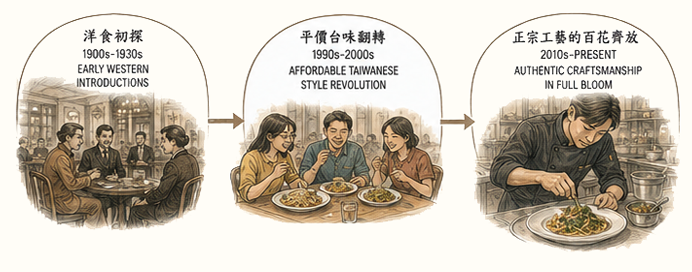
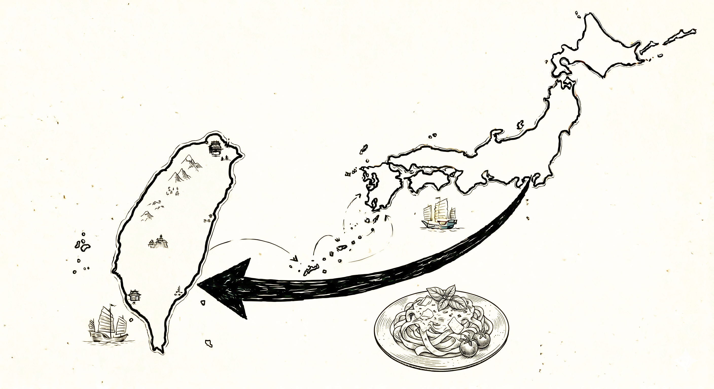
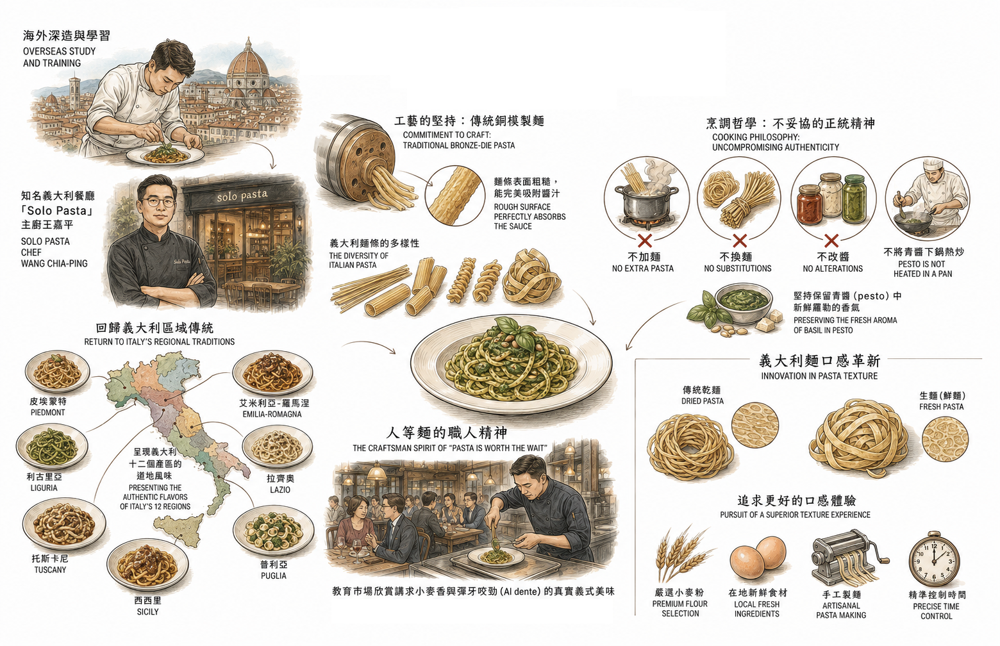
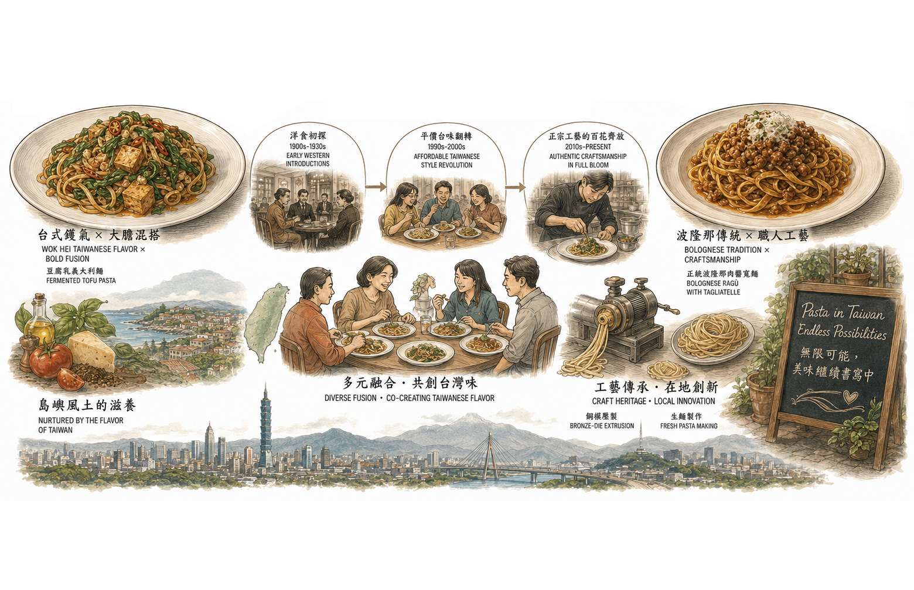

義大利麵在台灣的餐桌上，經歷了一場猶如「文化翻譯」般的奇妙旅程。從遙遠的西洋珍饈，蛻變為深接地氣的庶民美食，再進階至講究道地工藝的精緻餐飲。
這段長達百年的演進史，宛如一面映照出台灣社會變遷與餐飲實力的鏡子，展現了這座島嶼極強的味覺韌性與包容力。

這顆異國飲食的種子，早在百年前的日治時期便已悄悄播下。當時透過日本人的引介與轉譯，台灣人開始窺見西式餐飲的樣貌。
1908年落成的「鐵道飯店」，以及1934年開業的「波麗路」等西餐廳，成為了當時上流社會與文人雅士體驗西洋文化的奢華櫥窗。
然而，這些早期的西式料理多半經過日籍廚師的詮釋，帶有濃厚的「和風洋食」色彩，例如經典的紅酒燉牛肉或是帶有日式洋食影子的麵點。
這份間接的接觸，雖然不全然是原汁原味的義大利風情，卻讓台灣人的舌尖提早適應了跨文化融合的滋味，為日後擁抱並改造異國料理打下了良好的底蘊。

時序推移至上世紀九〇年代末期，義大利麵在台灣迎來了真正的普及化。走在各大專院校周邊或熱鬧商圈，主打平價、快速的義大利麵館如雨後春筍般冒出。
為了應付龐大且講求效率的客群，業者摸索出一套極具在地特色的營運模式：麵條通常預先煮至半熟備用，點餐後廚師再迅速舀入大量預製的紅、白、青醬，幾分鐘內便能熱騰騰端上桌。這種快餐化的節奏，成功讓義大利麵打破西餐廳的階級感，成為尋常學子與上班族日常溫飽的選項。
在追求效率與迎合在地口味的過程中，烹飪手法也發生了有趣的「質變」。原本西餐講究的平底鍋，被豪邁的中式尖底炒鍋取代；拌炒的油脂從初榨橄欖油換成了常見的沙拉油；有些廚師甚至會以醬油來提味。
不僅如此，台灣在地食材如剝皮辣椒、豆腐乳、小魚乾甚至是客家榨菜，也大膽地與義大利麵交融。這種充滿「鑊氣」與隨興風格的做法，或許在重視傳統的饕客眼中顯得不夠道地，但正是這種不受框架束縛的生命力，孕育出台灣專屬的市井風味。
然而，台灣的餐飲市場並未停留在單一的平價風潮。隨著消費者國際視野的開拓與味蕾的升級，2010年代起，台灣義大利麵市場邁入了追求「正宗工藝與融合」的轉型期。這個階段的特徵，展現於「回歸義大利區域傳統」與「義大利麵口感革新」兩大發展雙軌。

首先是對於「正統義式精神」的極致追求。許多赴海外深造的台灣廚師，開始將義大利各地區的風土料理原封不動地搬回台灣。以知名義大利餐廳「Solo Pasta」的主廚王嘉平為例，他打破了台灣人對「紅、白、青醬」的刻板印象，堅持呈現義大利十二個產區的道地風味。
為了還原正宗口感，他們引進了傳統的「銅模製麵」，這種麵條表面粗糙，能完美吸附醬汁；在烹調上，他們更堅持不為了迎合在地而妥協，不加麵、不換麵、不改醬，甚至為了保留青醬（pesto）中新鮮羅勒的香氣，堅持不將青醬下鍋熱炒。這種「人等麵」的職人精神，教育了市場懂得欣賞講求小麥香與彈牙咬勁（Al dente）的真實義式美味。
與此同時，另一股由日本吹向台灣的「生義大利麵（生麵）」風潮，則在口感上掀起了另一場革命。有別於市面上經過80度熱風長時間烘烤、以利長途運輸的「乾義大利麵」，生義大利麵未經高溫乾燥，保留了豐富的水分。
自2017年前後，如SPIGA石壁家、BANCO、MOLINO等餐飲品牌相繼登台或創立，將造價不斐的製麵機直接搬進店鋪，主打每日現做。生義大利麵那種軟Ｑ、富含嚼勁的口感，完美擊中了台灣人對於「麵條Ｑ彈度」的偏好。加上透明玻璃櫥窗內現擠現做的「可視化」展演，不僅創造了極大的市場差異化，也讓義大利麵的品嚐體驗向上攀升至兼具新鮮與質感的層次。
時至今日，義大利麵在台灣早已擺脫了單一「正宗與否」的包袱。今日的台灣餐桌上，我們既能享受一盤充滿熟悉台式鑊氣、大膽混搭豆腐乳的創意義大利麵；也能在下一餐，細細品味忠於波隆那百年傳統、講究銅模壓製與道地醬汁的職人麵點。
義大利麵以極強的韌性與包容力，吸納了這座島嶼的風土與人情，從早年的洋食初探、平價台味翻轉，一路進化至正宗工藝的百花齊放，寫下了屬於台灣自己，既熟悉又充滿驚喜的飲食篇章。
